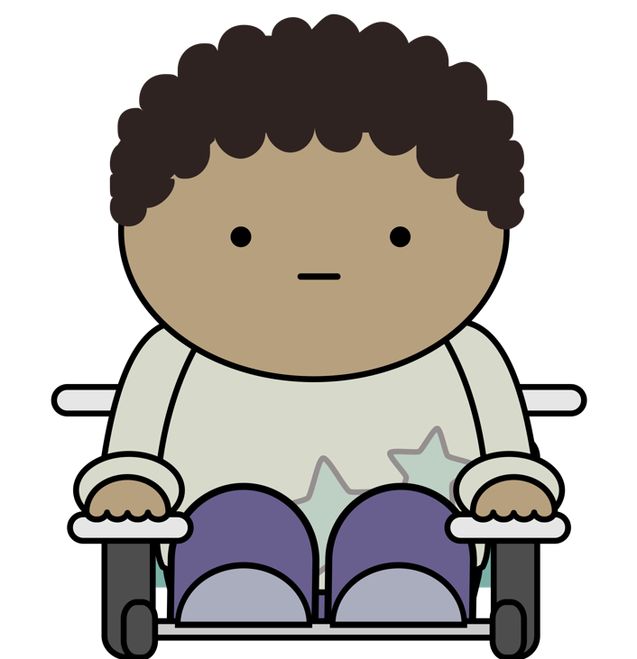

Nang Newbie

-
Nang is 18 years old and in the first year of an undergraduate degree in urban planning. He’s read lots of gushing articles about data science, and was excited by the prospect of learning how to do it, but dropped his CS 101 course after six weeks because nothing made sense. He’s doing better in Anya Academic’s course (which he is taking as an elective), but still spends most of his time copying, pasting, and swearing.
-
Nang did well in his high school math classes, and built himself a home page with HTML and CSS in a weekend workshop in grade 11. He has accounts on nine different social media site, and attends all of his morning classes online.
-
Nang wants self-paced tutorials with practice exercises, plus forums where he can ask for help.
-
Nang is reluctant to reveal his ignorance—he would rather get a low grade and blame it on partying than let his classmates see that he’s floundering.
Needs
Nang needs short overviews to orient him and introductory tutorials that include videos or animated GIFs showing exactly how to drive the tools, and that use datasets he can relate to.
See Also
- Anya Academic: his professor
- Exton Excel: also new to programming